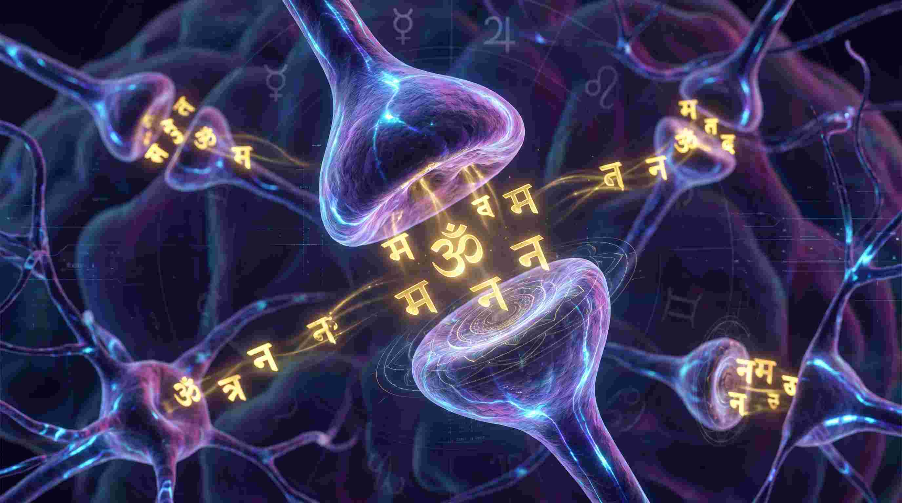
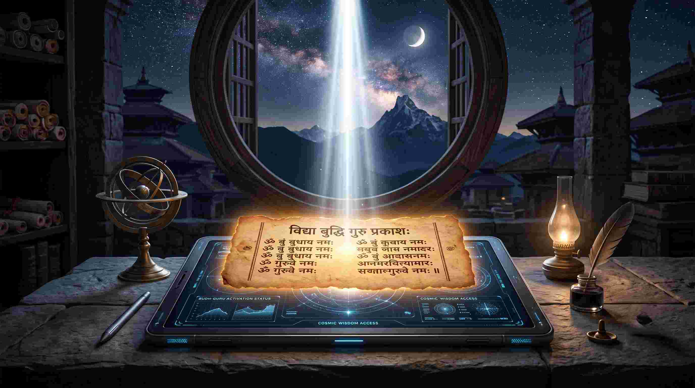

आज के डिजिटल युग में, जहाँ हमारा ध्यान (Attention Span) गोल्डफिश से भी कम हो गया है—हम चीजें भूल जाते हैं, पढ़ते समय फोकस नहीं कर पाते, और अक्सर 'ब्रेन फॉग' (Brain Fog) का शिकार रहते हैं। हम इसे ठीक करने के लिए महंगी दवाइयां (Nootropics) खाते हैं। लेकिन क्या आपको पता है कि वैदिक ऋषियों ने हजारों साल पहले ही मानव मस्तिष्क को 'सुपरचार्ज' करने का कोड लिख दिया था?
एक मेडिकल छात्र (MBBS) होने के नाते, मैं मानव मस्तिष्क के हिप्पोकैम्पस (Hippocampus) और न्यूरोप्लास्टिसिटी (Neuroplasticity) का गहराई से अध्ययन करता हूँ। जब मैंने मेधा सूक्त (Medha Suktam) का विश्लेषण किया, तो मुझे समझ आया कि यह केवल एक प्रार्थना नहीं है; यह आपके मस्तिष्क की न्यूरॉनल वायरिंग (Neural Wiring) को बदलने का एक सोनिक (Acoustic) एल्गोरिदम है।
"मेधा (Medha) केवल 'ज्ञान' नहीं है। ज्ञान तो गूगल पर भी है। मेधा का अर्थ है 'रिटेंशन' (Retention)—ज्ञान को धारण करने, समझने और सही समय पर उसे याद करने की कॉग्निटिव (Cognitive) क्षमता।"

मेडिकल एस्ट्रोलॉजी: मेधा, बुध (Mercury) और गुरु (Jupiter)
ज्योतिष में, आपकी बुद्धि और नर्वस सिस्टम का नियंत्रण बुध (Mercury) के पास है, जबकि ज्ञान (Wisdom) का नियंत्रण गुरु (Jupiter) के पास है। जब ये ग्रह राहु या शनि से पीड़ित होते हैं, तो व्यक्ति की याददाश्त (Memory) कमजोर हो जाती है और वह अक्सर भ्रमित रहता है।
आधुनिक न्यूरोबायोलॉजी (Neurobiology) में, जब आप मेधा सूक्त के विशिष्ट संस्कृत अक्षरों का उच्चारण करते हैं, तो वह आपके मस्तिष्क में गामा (Gamma) और अल्फा (Alpha) ब्रेन वेव्स उत्पन्न करता है। यह ध्वन्यात्मक ऊर्जा (Acoustic Energy) सीधे आपके प्रीफ्रंटल कॉर्टेक्स (Prefrontal Cortex) को उत्तेजित करती है, जिससे ध्यान, तर्क और सीखने की क्षमता कई गुना बढ़ जाती है।
सम्पूर्ण मेधा सूक्त (मूल संस्कृत पाठ और गहरा भावार्थ)
महान वेदों से लिया गया यह सूक्त मेधा देवी (सरस्वती का बुद्धिमत्ता स्वरूप) का आह्वान करता है। आइए इसे अर्थ सहित समझते हैं:
ॐ यश्छन्दसामृषभो विश्वरूपः ।
छन्दोभ्योऽध्यमृताथ्संबभूव ।
स मेन्द्रो मेधया स्पृणोतु ।
अमृतस्य देव धारणो भूयासम् ।
भावार्थ: हे परमेश्वर! आप समस्त वेदमंत्रों के अधिपति और विश्वव्यापी हैं। आप ही वह अमृतस्वरूप हैं, जिनसे ज्ञान की धारा प्रवाहित होती है। हे इन्द्रदेव! मेरी बुद्धि को 'मेधा' (तेजस्विता, विवेक और स्मरणशक्ति) से परिपूर्ण कीजिए। मुझे उस अमृत-ज्ञान का धारक बनाइए जो देवताओं को भी दुर्लभ है।
शरीरं मे विचर्षणम् ।
जिह्वा मे मधुमत्तमा ।
कर्णाभ्यां भूरिविश्रुवम् ।
ब्रह्मणः कोशोऽसि मेधया पिहितः ।
श्रुतं मे गोपाय । ॐ शान्तिः शान्तिः शान्तिः ॥
भावार्थ: मेरा शरीर स्वस्थ और कर्मशील बने। मेरी जिह्वा सदैव मधुर और प्रभावशील वचन बोले। मेरे कान शुभ और ज्ञानमय वचन सुनें। हे प्रभु, मेरी चेतना ब्रह्म का कोष बने जो मेधा से सुरक्षित हो। मैं जो भी सुनूं या सीखूं, वह मेरी स्मृति (Memory) में हमेशा सुरक्षित रहे। तीनों लोकों में शांति हो।
ॐ मेधादेवी जुषमाणा न आगाद्विश्वाची भद्रा सुमनस्यमाना ।
त्वया जुष्टा नुदमाना दुरुक्तान् बृहद्वदेम विदथे सुवीराः ।
भावार्थ: हे मेधादेवी! आप सर्वव्यापी, कल्याणमयी और शुभ विचारों से युक्त हैं। आप कृपापूर्वक मेरे भीतर पधारें। आपकी कृपा से मेरे मन के नकारात्मक (Negative) विचार नष्ट हों, और मैं सभा तथा अध्ययन में तेज और आत्मविश्वास के साथ बोल सकूं।
त्वया जुष्ट ऋषिर्भवति देवि त्वया ब्रह्मागतश्रीरुत त्वया ।
त्वया जुष्टश्चित्रं विन्दते वसु सानो जुषस्व द्रविणो न मेधे ॥
भावार्थ: आपकी कृपा से ही कोई साधारण व्यक्ति ऋषि बन जाता है। आपकी कृपा से ही ब्रह्मज्ञान और भौतिक समृद्धि प्राप्त होती है। आपकी अनुकंपा से मनुष्य बुद्धिमान् और यशस्वी बनता है। हे देवी! कृपया मुझे भी ऐसा दिव्य ज्ञान और बुद्धि प्रदान करें।
मेधां म इन्द्रो ददातु मेधां देवी सरस्वती ।
मेधां मे अश्विनावुभावाधत्तां पुष्करस्रजा ।
भावार्थ: हे इन्द्रदेव! मुझे ज्ञान और मेधा दें। हे देवी सरस्वती! मुझे स्मरणशक्ति और मधुर वाणी का वरदान दें। कमल की मालाओं से विभूषित हे अश्विनीकुमारों! आप दोनों मुझे कुशाग्र बुद्धि (Sharp Intellect) और दिव्य तेज प्रदान करें।
अप्सरासु च या मेधा गन्धर्वेषु च यन्मनः ।
दैवीं मेधा सरस्वती सा मां मेधा सुरभिर्जुषता स्वाहा ॥
भावार्थ: अप्सराओं में जो मेधा है, गंधर्वों में जो सूक्ष्म और कलात्मक मन है, वही दैवी मेधा (सरस्वती स्वरूपा) मुझे प्राप्त हो। हे सुरभि रूपा मेधादेवी! मुझ पर प्रसन्न हों, यह आहुति (स्वाहा) आपको समर्पित है।
आमां मेधा सुरभिर्विश्वरूपा हिरण्यवर्णा जगती जगम्या ।
ऊर्जस्वती पयसा पिन्वमाना सा मां मेधा सुप्रतीका जुषन्ताम् ।
भावार्थ: वह मेधादेवी जो सुगंधमयी, विश्वरूपा, स्वर्णवर्णा और सब लोकों में विचरण करने वाली है। जो ऊर्जा (Energy) से भरी और अमृतरस से सिंचित है, वह मेधा मुझ पर प्रसन्न हों और मेरे मन को सामर्थ्यवान बनाएं।
मयि मेधां मयि प्रजां मय्यग्निस्तेजो दधातु ।
मयि मेधां मयि प्रजां मयीन्द्र इन्द्रियं दधातु ।
मयि मेधां मयि प्रजां मयि सूर्यो भ्राजो दधातु ।
भावार्थ: अग्निदेव मेरे भीतर तेज और मेधा का संचार करें। इन्द्रदेव मेरी इन्द्रियों (Senses) में शक्ति और स्थिरता प्रदान करें। सूर्यदेव मुझमें प्रकाश, बुद्धि और ओज (Aura) प्रदान करें। मेरी बुद्धि सदैव प्रकाशित रहे।
ॐ महादेव्यै च विद्महे ब्रह्मपत्न्यै च धीमहि । तन्नो वाणी प्रचोदयात् ।
ॐ हंसहंसाय विद्महे परमहंसाय धीमहि । तन्नो हंसः प्रचोदयात् ।
ॐ शान्तिः शान्तिः शान्तिः ॥
भावार्थ: हम महादेवी, ब्रह्मपत्नी सरस्वती का ध्यान करते हैं। वह वाणी की देवी हमारी बुद्धि को प्रेरणा दें। हम उस परम हंस (ब्रह्मस्वरूप साक्षी) का ध्यान करते हैं। वह हमें सत्य और आत्मज्ञान की ओर प्रेरित करे। शरीर, मन और आत्मा में पूर्ण शांति हो।

मेधा सूक्त के वैज्ञानिक और ज्योतिषीय लाभ
- छात्रों के लिए अमोघ अस्त्र: मेडिकल या इंजीनियरिंग की तैयारी कर रहे छात्रों के लिए यह 'ब्रेन हैक' (Brain Hack) है। परीक्षा से पहले इसका पाठ तनाव (Cortisol) को घटाता है और 'मेमोरी कंसोलिडेशन' (Memory Consolidation) को बढ़ाता है।
- वाक्पटुता (Communication Skills): जो लोग हकलाते हैं या इंटरव्यू में घबरा जाते हैं, उनके लिए यह स्तोत्र उनके 'विशुद्ध चक्र' (Throat Chakra) और बुध ग्रह (Mercury) को तुरंत सक्रिय करता है।
- न्यूरोलॉजिकल हीलिंग: डिमेंशिया (Dementia) या उम्र के साथ याददाश्त कम होने की समस्या में इस मंत्र के वाइब्रेशन्स मस्तिष्क की कोशिकाओं (Neurons) को फिर से जीवंत करते हैं।
निष्कर्ष: अपनी बुद्धि के हार्डवेयर को अपग्रेड करें
हम मोबाइल और कंप्यूटर का तो सॉफ्टवेयर और हार्डवेयर अपग्रेड करते रहते हैं, लेकिन अपने शरीर के सबसे बड़े सुपरकंप्यूटर—अपने मस्तिष्क—पर ध्यान नहीं देते।
मेधा सूक्त आपके मस्तिष्क का वही 'सॉफ्टवेयर अपडेट' है। प्रतिदिन सुबह पूर्व या उत्तर दिशा की ओर मुख करके, रीढ़ की हड्डी सीधी रखकर इस सूक्त का केवल एक बार सस्वर पाठ करें। कुछ ही हफ्तों में आप अपनी एकाग्रता (Focus), आत्मविश्वास और याददाश्त में वह बदलाव देखेंगे जिसे कोई मेडिकल टॉनिक नहीं ला सकता!